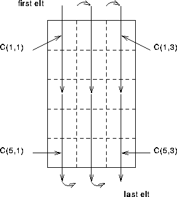

Fortran 90 does not have any storage association , this means that, unlike
FORTRAN 77, the standard does not specify how arrays are to be organised in
memory.
The lack of implicit storage association makes it easier to write portable
programs and allows compiler writers more freedom to implement local
optimisations. For example, in distributed memory computers an array may be
stored over 100 processors with each processor owning only a small
section of the whole array -- the standard will allow this.
, this means that, unlike
FORTRAN 77, the standard does not specify how arrays are to be organised in
memory.
The lack of implicit storage association makes it easier to write portable
programs and allows compiler writers more freedom to implement local
optimisations. For example, in distributed memory computers an array may be
stored over 100 processors with each processor owning only a small
section of the whole array -- the standard will allow this.
There are certain situations where an ordering is needed, for example, during input or output and in these circumstances Fortran 90 does define ordering which can be used in such contexts. It is defined in the same manner as the FORTRAN 77 storage association but it does not imply anything about how array elements are stored.
The array element ordering is again of column major form:
C(1,1),C(2,1),..,C(5,1),C(1,2),C(2,2),..,C(5,3)

Figure 2: Visualisation Of Array Element Ordering
This ordering is used in array constructors, I/O statements, certain intrinsics (TRANSFER, RESHAPE, PACK, UNPACK and MERGE) and any other contexts where an ordering is needed.
Now try this question